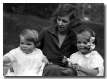
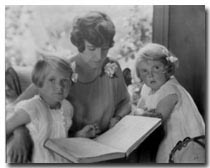
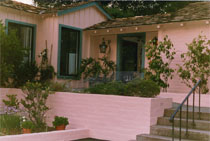
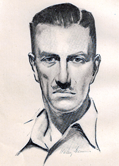

|
||
Marion Boisot |
||
|
Marion Boisot was born in LaGrange, Illinois. She was the daughter of Emile Kellogg Boisot and Lillie Reid. She was the wife of Byington Ford, a manager at the Del Monte Properties in Pebble Beach, California. |
||
| Important Facts | ||
| August 28, 1897 | Born in LaGrange, Illinois. Marion was the daughter of Emile Kellogg Boisot and Lillie Reid. |
 |
| 1910 | The US Federal Census lists Emile K Boisot (51), Lily Reid (50), Louis M. (17), and Marion (12), living in 6-WD Chicago, Cook, Illinois. Source: 1910 United States Federal Census. | |
| She went to a finishing school in LaGrange, Illinois. | ||
| April 3, 1915 | She and her parents traveled from Chicago to California staying at the Del Monte Hotel in Monterey. Source: San Francisco Chronicle (San Francisco, CA) Page: 32. | |
| She was known to have dated Jack Neville, who helped design the Pebble Beach Golf Links. They called him "Apple Jack." Source: Conversation with Marion's daughter (Pat). |
 |
|
| October 31, 1920 | Marion Boisot's engagement to Byington Ford was announced in the the Chicago Sunday Tribune and he San Francisco Chronicle newspapers. Source: Chicago Sunday Tribune (Oct 31, 1920) and San Francisco Chronicles (Nov 7, 1920). | |
| November 17, 1920 | Marion was as married to Byington Ford at the Del Monte Hotel in Monterey, California (now the Naval Postgraduate School). | |
| August 22, 1921 | Mary Jane Ford was born in San Francisco, California. | |
| 1924-1935 | Byington and Marion Ford built their Spanish-style 17-Mile Drive house in Pebble Beach, overlooking the first green of the Pebble Beach golf course. The residence was designed by noted architect Bernard R. Maybeck. Source: Bernard Maybeck Web site; San Francisco Chronicle, Page 48. |

|
| May 17, 1923 |
Patricia Ford was
born in San Francisco, California. A photograph from the Pebble Beach home shows Pat seated on the family's Jacobean Revival-style bench in the garden. |
|
| December 4, 1926 | Audrey Ford was born in San Francisco, California. | |
| 1927 | Ford, Mr. and Mrs. Byington and Marion Boisot were listed in the SF Social Register. There address was listed as Pebble Beach. Source: San Francisco Social Register 1927. | |
| 1930 | US Federal Census lists Byington Ford (39), Marion B. (32), Mary Jane (8), Patricia (6), and Audrey (3) living in Pebble Beach, Monterey, California. Source: 1930 United States Federal Census. | |
| Byington bought a 400 acre ranch off Via Las Encinas in Carmel Valley, California from the Pacific Improvement Company. Source: Conversation with Audrey Cordrey. | ||
| 1932 | Marion is listed as "FORD, Mr. & Mrs. Byington (Marion BOISOT), Pebble Beach, Cal." Source: Social Register, San Francisco, California, 1932, Vol., XLVI, No. 9. |
 |
| 1938 | Marion divorced Byington Ford. | |
| After they sold their home in Pebble Beach, Marion moved to San Francisco, California, where she and her daughters lived at 2170 Jackson Street. | ||
| 1938 | Marion and her daughters later moved to Pasadena, California (585 Belle Fontaine St.). | |
| April 15, 1939 | Marion B. Ford (40) and Howard W. Ernst (38) were passengers going to Ensenada, Mexico. Source: California, San Diego, Airplane Passenger and Crew Lists, 1929-1954. | |
| August 27, 1939 | Her mother, Lilly R. Boisot, died in Carmel, California. | |
| December 23, 1939 | Married to Howard W. Ernst, M.D. in Pasadena, California. | |
| Feb 1, 1941 | Her father, Emile Kellogg Boisot, died in Pasadena, California. | |
| February 15, 1947 | Married George Faunce Whitcomb in San Francisco. He wrote a book called Serpent's Credo in 1931. |
 |
| She was a volunteer with the Monterey Peninsula Volunteer Services Thrift Shop. | ||
| 1950s | Maron married Dudley P. Sanford M.D.. | |
| Marion often entertained family and friends during the holidays at her Carmel Valley home. The family would gather around her dining room table to enjoy wonderful meals together. At Christmas, she decorated the table with a special centerpiece arranged on a glass mirror and featuring miniature Christmas trees and delicate blown-glass reindeer. | ||
| July 4, 1985 | Dudley P. Sanford died in Carmel Valley, California. Source: California Death Index. | |
| June 15, 1990 | Marion died at her home in Carmel Valley, California of a stroke. She was 92 years old. | |
| 1990 | A Wake was held at her home in Carmel Valley, California. Her daughters, Mary Jane, Audrey, and Patricia were at the Wake. |